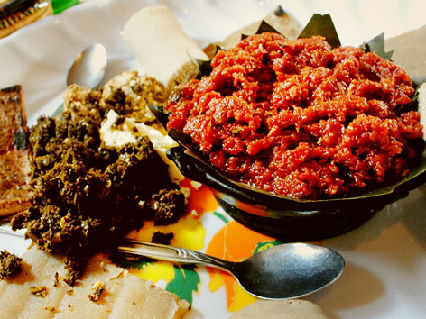

Kitfo

Kitfo is just amazing!
kitfo is a traditional food which is usually served in special occassions.
It is often eaten from a communal bowl with each diner using injera.
Ingredients
- lbs top round beef (freshly cut)
- teaspoons ground cayenne pepper (Mitmita*)
- tablespoons clarified butter (Nitir Kebe)
- teaspoon cardamom powder (korerima)
- teaspoon garlic powder (optional)
Steps
- Cut the meat in small pieces; remove fat and seams.
- In a food processor put small amount of the meat at a time, spread
some mitmita, grind until meat is finely chopped; using a fork,
remove any residue of fat and seams; place the spicy ground meat in a dish;
repeat the process until all required meat is done.
- In small pot, on a lower heat melt the butter, add the remaining mitmita,
false cardamom, (garlic, black pepper, salt, if needed); remove from heat.
- Combine the spicy ground meat with the spicy butter; using fork and spoon,
mix it until completely marinated.
- Place it in a lightly warm serving dish, serve it immediately with Injera or bread.
If preferred, sauté the marinated meat for two to three minutes.